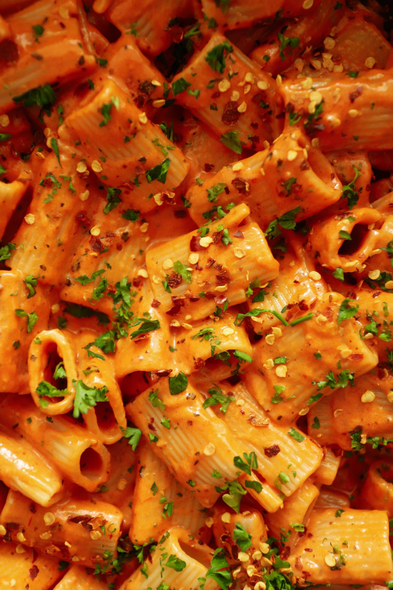

Spicy Vodka Pasta

What is Spicy Vodka Pasta? or Gigi Hadid Pasta?
The Gigi Hadid Pasta is nothing new, in fact it originated in Italy and is more commonly known as
Spicy Vodka Pasta. It’s a creamy tomato-based sauce that starts off with cooking down some onions
and garlic. Then tomato paste is caramelized in olive oil and heavy cream is added to turn it into a
beautifully smooth sauce. And if that didn’t sound good enough, the final touches are butter, tons of
freshly grated parmesan, and some pasta water. Red pepper flakes spice it up while the basil brings a
fresh herbal touch to the whole dish. It’s truly perfection and my new favorite pasta dish to make.
Ingredients
- 16 ounces of rigatoni or penne pasta
- 1/2 cup extra virgin olive oil
- 1 Tbsp freshly minced garlic
- 2/3 cups tomato paste
- 1 1/3 cup heavy cream
- 2 tsp red pepper flakes
- 2 tsp dried basil
- 1/2 cup freshly grated parmesan
- 2 Tbsp unsalted butter
- pasta water
- 1/4 cup vodka
Steps
- Bring a large pot of salted water to a boil. Throw in the pasta and cook according to package
directions. Reserve at least 1 cup of pasta water and then drain
- In a saucepan, add the olive oil over medium heat. Add the garlic and tomato paste and cook
for about 1-2 minutes before adding vodka and let cook out. After the vodka is cooked out, let the sauce sit
and cook until the tomato paste will darken in color from a bright red to reddish
brown. This process removes acidity from the tomato paste.
- Add heavy cream and mix until incorporated. Simmer for about 2 to 3 minutes
- Add the red pepper flakes, dried basil, salt, and black pepper to taste. Mix again
- Add the grated parmesan, butter, and 1/2 a cup pasta water. Mix until the sauce is smooth and
creamy. If you think it needs more pasta water, you can add but 1/2 a cup is perfect for me
- Toss in the cooked pasta and mix to coat evenly. Optional, top it off with more grated parm,
chopped parsley, and chili flakes
Additional Notes
- You can always add more of anything if you would like
- Can store for up to 3-5 days
- There is no alcohol, it will be cooked out so safe for kids!